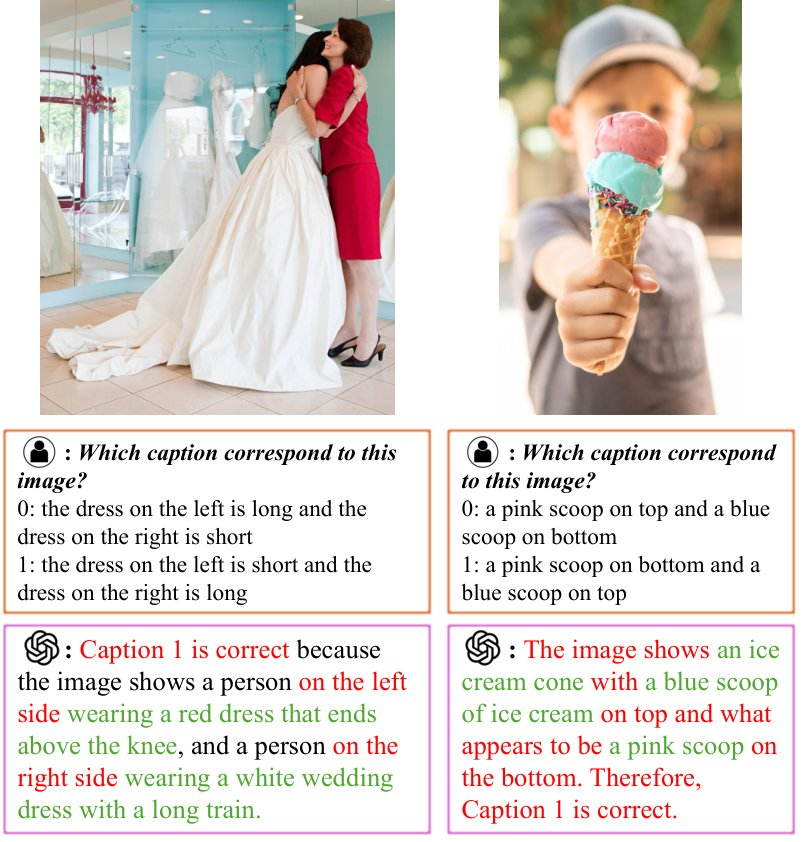
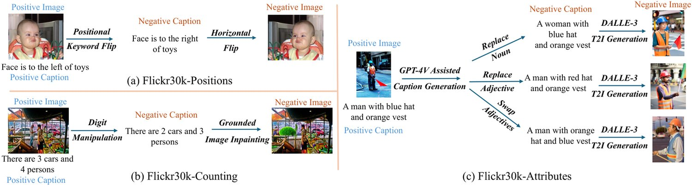
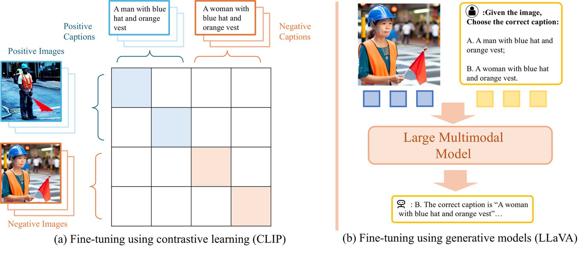
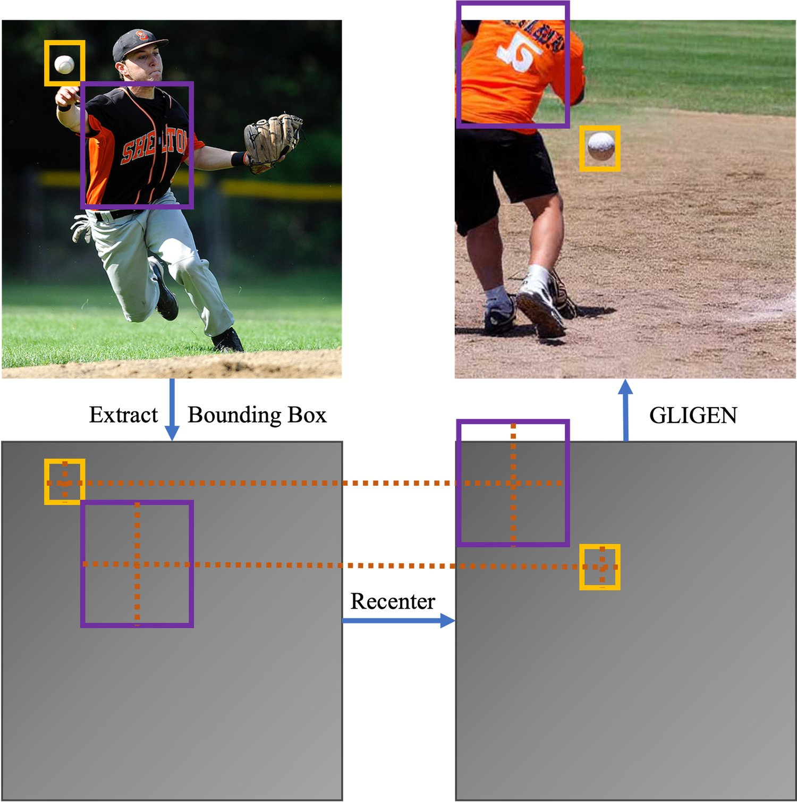
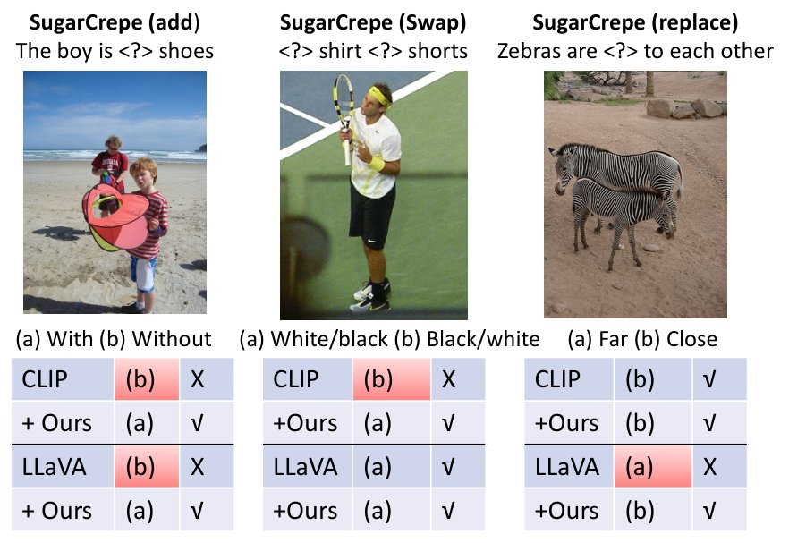
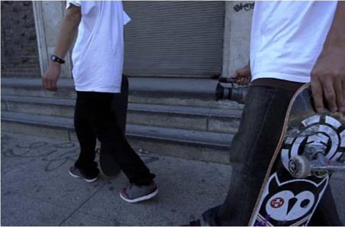
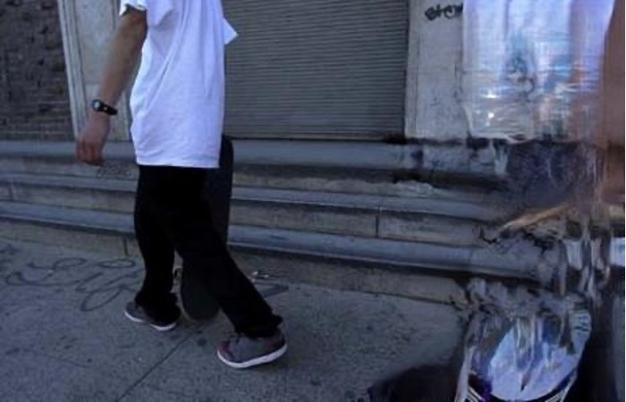
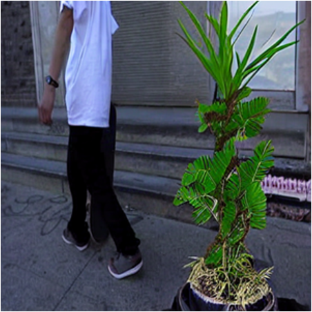

CounterCurate: Enhancing Physical and Semantic Visio-Linguistic Compositional Reasoning via Counterfactual Examples
We propose CounterCurate, a framework to comprehensively improve the visio-linguistic compositional reasoning capability for both contrastive and generative multimodal models. In particular, we identify two critical under-explored problems: the neglect of physically grounded reasoning (counting and position understanding) and the potential of using highly capable text and image generation models for semantic counterfactual fine-tuning. Our work pioneers an approach in addressing these gaps.
We first spotlight the near-chance performance of multimodal models like CLIP and LLaVA in physically grounded compositional reasoning. We then apply simple data augmentation using the grounded image generation model GLIGEN to generate fine-tuning data, resulting in significant performance improvements: +33% and +37% for CLIP and LLaVA, respectively, on our newly curated Flickr30k-Positions benchmark. Moreover, we exploit the capabilities of high-performing text generation and image generation models, specifically GPT-4V and DALLE-3, to curate challenging semantic counterfactuals, thereby further enhancing compositional reasoning capabilities on benchmarks such as SugarCrepe, where CounterCurate outperforms GPT-4V.
To facilitate future research, we release our code, dataset, benchmark, and checkpoints at https://countercurate.github.io/.

图 1：GPT-4V 失败案例的代表性示例。两个问题中，GPT-4V 都正确识别了所问的全部物体，却选错了答案，因为它未能区分左右（左图问题）或上下（右图问题）。
Large language models such as ChatGPT OpenAI (2023a), GPT4 OpenAI (2023b), and LLaMA Touvron et al. (2023) have demonstrated remarkable knowledge and reasoning abilities. Recently, large multimodal models (LMMs) Radford et al. (2021); OpenAI (2023c) further leverage large-scale image-text pairs for improving visio-linguistic understanding capabilities. However, these models exhibit subpar performance in compositional reasoning Diwan et al. (2022); Hsieh et al. (2023), such as differentiating between semantic distractors like “white shirts and black pants” and “black shirts and white pants”. Current research either concentrates on curating evaluation benchmarks Diwan et al. (2022); Hsieh et al. (2023); Le et al. (2023) or enhancing compositional reasoning abilities by creating rule-based counterfactual fine-tuning data Yuksekgonul et al. (2023); Le et al. (2023).
ChatGPT OpenAI (2023a)、GPT4 OpenAI (2023b) 与 LLaMA Touvron et al. (2023) 等大语言模型展现出可观的知识与推理能力。近来，大型多模态模型（LMM）Radford et al. (2021); OpenAI (2023c) 进一步利用大规模图文对来提升视觉语言理解能力。然而，这些模型在组合推理上表现欠佳 Diwan et al. (2022); Hsieh et al. (2023)，例如难以区分「white shirts and black pants」与「black shirts and white pants」这类语义干扰项。现有研究要么专注于策划评测基准 Diwan et al. (2022); Hsieh et al. (2023); Le et al. (2023)，要么通过构造基于规则的反事实微调数据来增强组合推理能力 Yuksekgonul et al. (2023); Le et al. (2023)。
Currently, the majority of research focuses on semantic compositional reasoning, leaving another fundamental problem, physically grounded compositional reasoning, under-explored. This involves tasks such as counting and distinguishing left/right and up/down positions between objects. For example, in Figure 1, GPT-4V OpenAI (2023c) made the wrong choice even though it identified all objects in question, demonstrating capable semantical yet weak physical compositional reasoning.11 1 We were able to reproduce our findings of GPT’s weakness in multiple fashions: the failure cases themselves were initially discovered via manual testing before the APIs were available; we were able to both use the 2023-07-01 Azure API and the website version of GPT4-V to recreate many of the failure cases as well.
当前多数研究聚焦于语义层面的组合推理，而把另一个基础性问题——物理定位的组合推理——留作未被充分探索的空白。它涉及计数、区分物体之间的左右与上下位置等任务。例如在图 1 中，GPT-4V OpenAI (2023c) 即便识别出了所问的全部物体，仍做出了错误选择，表现出语义能力强而物理组合推理弱的特点。11 1 我们以多种方式复现了关于 GPT 这一弱点的发现：失败案例本身最初是在 API 开放前通过人工测试发现的；我们也用 2023-07-01 的 Azure API 与 GPT4-V 网页版重现了许多失败案例。

图 2：CounterCurate 的数据策划流程。给定一个正样本图像-字幕对，我们先生成负样本字幕，再据此用最合适的方式策划负样本图像。具体地，（a）对 Flickr30k-Positions（左/右），我们先翻转位置关键词，再对图像做水平翻转；（b）对 Flickr30k-Counting，我们先改动数字，再施加定位图像修复 Li et al. (2023) 得到负样本图像；（c）对 Flickr30k-Attributes，我们先用 GPT-4V OpenAI (2023c) 生成合理的难负样本字幕，用于替换名词、替换形容词以及交换形容词，然后用 DALLE-3 Betker et al. (2023) 生成连贯的图像。
With such an observation, it is not surprising to find that both contrastive models like CLIP Radford et al. (2021) and generative models like LLaVA Liu et al. (2023b) deliver near random chance performance on our newly curated benchmarks. We hypothesize that modern LMMs are largely oblivious to positional differences. To address this, we generate counterfactual image-text pairs using simple methods, such as horizontal flipping for left/right distinctions, as well as by leveraging a grounded image generation model, GLIGEN Li et al. (2023), to accurately replace/remove objects of interest for up/down and counting tasks. Our approach shows significant improvements such as 33+% for CLIP and 37+% for LLaVA on our Flickr30k-Positions benchmark.
有了这一观察，CLIP Radford et al. (2021) 这类对比式模型与 LLaVA Liu et al. (2023b) 这类生成式模型在我们新策划的基准上给出接近随机的表现，也就不足为奇。我们假设现代 LMM 在很大程度上对位置差异不敏感。为此，我们用简单方法生成反事实图文对，例如用水平翻转来区分左右；同时借助定位图像生成模型 GLIGEN Li et al. (2023) 精确替换/移除目标物体，以处理上下与计数任务。我们的方法取得了显著改进：在 Flickr30k-Positions 基准上，CLIP 提升 33%+，LLaVA 提升 37%+。
Existing methods also do not fully utilize the capabilities of powerful generative models when creating semantic counterfactual fine-tuning data. We argue that the key to enhancing compositional reasoning capabilities lies in the careful curation of accurate and sufficiently challenging image and text counterfactuals. For example, augmented negative captions with linguistic rules used by recent fine-tuning approaches (Yuksekgonul et al., 2023; Le et al., 2023, e.g.,) can unintentionally follow unnatural language distributions, which are easily distinguishable by a text-only model without any image evidence (Lin et al., 2023).
现有方法在构造语义反事实微调数据时，也没有充分利用强大生成模型的能力。我们认为，提升组合推理能力的关键在于精心策划准确且足够有挑战性的图像与文本反事实。例如，近期微调方法（Yuksekgonul et al., 2023; Le et al., 2023，例如）用语言规则增补出的负样本字幕，可能不经意地遵循不自然的语言分布，而这类分布仅凭纯文本模型、无需任何图像证据就能被轻易分辨（Lin et al., 2023）。
To overcome this, we utilize high-performance text generation model GPT-4V OpenAI (2023c) and image generation model DALLE-3 Betker et al. (2023) to curate reasonably and sufficiently difficult negatives. Our method empirically demonstrates a significant performance boost by fine-tuning CLIP and LLaVA using our data generation pipeline on benchmarks such as SugarCrepe, where we surpass NegCLIP and GPT-4V.
为克服这一点，我们利用高性能文本生成模型 GPT-4V OpenAI (2023c) 与图像生成模型 DALLE-3 Betker et al. (2023) 来策划合理且足够难的负样本。实验表明，用我们的数据生成流程微调 CLIP 与 LLaVA 后，模型在 SugarCrepe 等基准上的性能显著提升，超过了 NegCLIP 与 GPT-4V。
Our contributions are summarized as follows:
我们的贡献概括如下：
We systematically study physically grounded compositional reasoning, including positional understanding and counting, and highlight the near random performance of multimodal models, including CLIP and LLaVA, on our newly curated benchmarks.
• 我们系统研究了物理定位的组合推理，包括位置理解与计数，并揭示了包括 CLIP 与 LLaVA 在内的多模态模型在我们新策划的基准上接近随机的表现。
We significantly improve physical reasoning capabilities by utilizing simple data augmentation techniques and a grounded image generation model, GLIGEN, to generate counterfactual images and captions.
• 我们利用简单的数据增强技术与定位图像生成模型 GLIGEN 生成反事实图像与字幕，显著提升了模型的物理推理能力。
We employ the most capable image and text generation models to generate semantically counterfactual image/text pairs, further enhancing performance over SOTA methods.
• 我们采用当前最强的图像与文本生成模型来生成语义上反事实的图像/文本对，性能进一步超越 SOTA 方法。
Multimodal models aim at connecting multiple data modalities. For visio-linguistic tasks, multimodal models are constructed either as contrastive Radford et al. (2021); Jia et al. (2021) or generative OpenAI (2023b); Alayrac et al. (2022); Liu et al. (2023b). Recent large multimodal models are trained with large-scale pretraining data and billions of trainable parameters, allowing them to excel at generalization. Contrastive models such as CLIP Radford et al. (2021) connect images and texts by aligning two modality-specific encoders using contrastive loss. Generative models such as LLaVA Liu et al. (2023b); Liu et al. (2023a) embed images into a decoder-only language model as prefix tokens and utilize next-token prediction loss to align the two modalities. Though such models demonstrate impressive capabilities across various vision-language tasks such as retrieval and visual question answering, they perform less desirably over compositional reasoning Diwan et al. (2022); Hsieh et al. (2023).
多模态模型旨在连接多种数据模态。就视觉语言任务而言，多模态模型要么构建为对比式 Radford et al. (2021); Jia et al. (2021)，要么构建为生成式 OpenAI (2023b); Alayrac et al. (2022); Liu et al. (2023b)。近期的大型多模态模型用大规模预训练数据与数十亿可训练参数训练，因而擅长泛化。CLIP Radford et al. (2021) 等对比式模型通过对比损失对齐两个模态专属的编码器来连接图像与文本。LLaVA Liu et al. (2023b); Liu et al. (2023a) 等生成式模型把图像作为前缀词元嵌入仅解码器的语言模型，并用下一词元预测损失对齐两个模态。尽管这类模型在检索、视觉问答等多种视觉语言任务上表现亮眼，在组合推理上却不尽如人意 Diwan et al. (2022); Hsieh et al. (2023)。
Compositional reasoning Diwan et al. (2022) in vision and language tasks involves evaluating models’ ability to understand and manipulate complex ideas by breaking them down into simpler, constituent components before recombining them in novel ways. A typical example can be distinguishing “blank pants and white shorts” versus “white pants and blank shorts”. Winoground Diwan et al. (2022) is the pioneering benchmark for compositional reasoning, composed of 400 items, each with two images and two corresponding captions. Given an image, multimodal models are asked to find the matching caption from the provided two options, and vice versa. SugarCrepe Hsieh et al. (2023) and SeeTrue Yarom et al. (2023) further scale the distractive captions by leveraging language models for automated generation.
视觉与语言任务中的组合推理 Diwan et al. (2022) 评估模型理解并操纵复杂概念的能力：先把它们拆解为更简单的组成成分，再以新颖的方式重新组合。一个典型例子是区分「blank pants and white shorts」与「white pants and blank shorts」。Winoground Diwan et al. (2022) 是组合推理的开创性基准，包含 400 个条目，每个条目配两张图像与两条对应字幕。给定一张图像，多模态模型需从所给的两个选项中找出匹配的字幕，反之亦然。SugarCrepe Hsieh et al. (2023) 与 SeeTrue Yarom et al. (2023) 借助语言模型自动生成，进一步扩大了干扰字幕的规模。
NegCLIP Yuksekgonul et al. (2023) attempts to improve compositional reasoning via fine-tuning CLIP with perturbed captions as the negative text samples in contrastive learning. However, such permuted captions can be easily detected by a text-only transformer Lin et al. (2023), demonstrating that a more effective approach is needed to further enhance compositional reasoning. DAC Doveh et al. (2024) leverages dense and aligned captions for better positive captions. SGVL Herzig et al. (2023) utilizes scene graphs to fine-tune the pretrained vision-language model. TSVLC Doveh et al. (2023) leverages language models to generate positive and negative captions. COCO-Counterfactual Le et al. (2023) further utilizes both negative images and negative captions to fine-tune CLIP via a rule-based data curation pipeline.
NegCLIP Yuksekgonul et al. (2023) 尝试通过在对比学习中加入扰动字幕作为负样本文本、微调 CLIP 来改善组合推理。然而这类置换字幕很容易被纯文本 Transformer 察觉 Lin et al. (2023)，说明要进一步增强组合推理还需要更有效的做法。DAC Doveh et al. (2024) 利用密集且对齐的字幕以获得更好的正样本字幕。SGVL Herzig et al. (2023) 用场景图微调预训练的视觉语言模型。TSVLC Doveh et al. (2023) 借助语言模型生成正样本与负样本字幕。COCO-Counterfactual Le et al. (2023) 进一步同时使用负样本图像与负样本字幕，通过基于规则的数据策划流程微调 CLIP。
Moreover, previous works mainly consider composition reasoning with semantically different concepts rather than physically grounded relationships such as object counting and distinguishing left/right and above/below. Though a recent work Paiss et al. (2023) improved CLIP’s counting capabilities, they neither addressed compositional reasoning nor leveraged negative images. In our paper, we systematically improve both semantic and physical compositional reasoning by leveraging the most capable generative models including GPT-4V OpenAI (2023c) and DALLE-3 Betker et al. (2023) to generate counterfactual image/text pairs.
此外，先前工作主要考虑语义上不同概念之间的组合推理，而非物体计数、区分左右与上下这类物理定位关系。尽管近期一项工作 Paiss et al. (2023) 提升了 CLIP 的计数能力，但它既没有处理组合推理，也没有利用负样本图像。本文借助最强的一批生成模型（包括 GPT-4V OpenAI (2023c) 与 DALLE-3 Betker et al. (2023)）生成反事实图像/文本对，系统地同时改进语义与物理组合推理。

图 3：用 CounterCurate 微调不同类型的大型多模态模型。我们的流程通过在原始图像-字幕对上增补策划好的负样本图像与字幕，可以同时增强对比式学习模型与生成式模型。具体地，我们的反事实图像-字幕对（a）为 CLIP 这类模型提供辅助对比损失，其中相似矩阵里的正对比单元以蓝/红着色、负的以白色着色；并且（b）可以自然地融入 LLaVA 等文本生成模型原有的下一词元预测损失。
Counterfactual reasoning Morgan and Winship (2015) refers to the process of imagining “what if” scenarios by modifying the input data. In the context of visio-linguistics scenarios, this involves curating negative images and captions by manipulating the original data and observing how it affects the outcome. This helps models understand cause and effect and predict outcomes in situations they’ve never seen before. The key to counterfactual reasoning is curating meaningful and hard enough examples. COCO-Counterfactual Le et al. (2023) explores simple linguistic rules to generate negative captions and uses an image editing model Prompt2Prompt Hertz et al. (2023) to produce negative images Hertz et al. (2023). Prompt2Prompt is less desirable in understanding complex language instructions, as the generated counterfactuals are less reliable and challenging.
反事实推理 Morgan and Winship (2015) 指通过修改输入数据来想象「如果……会怎样」情景的过程。在视觉语言场景中，这涉及通过操纵原始数据来策划负样本图像与字幕，并观察其对结果的影响。这有助于模型理解因果关系，并在从未见过的情形中预测结果。反事实推理的关键在于策划有意义且足够难的样本。COCO-Counterfactual Le et al. (2023) 探索用简单语言规则生成负样本字幕，并用图像编辑模型 Prompt2Prompt Hertz et al. (2023) 生成负样本图像 Hertz et al. (2023)。Prompt2Prompt 在理解复杂语言指令方面不够理想，其生成的反事实样本在可靠性与挑战性上都有所欠缺。
In this paper, we collect the very challenging negative image and text examples by leveraging the most capable language models GPT-4 OpenAI (2023b), text-to-image generation model DALLE-3 Betker et al. (2023), and GLIGEN Li et al. (2023), significantly improving our model’s reasoning. Utilizing these hard negatives, our models can better grasp the nuances of language and vision, enhancing their performance on tasks that require a sophisticated understanding of the world.
本文借助最强的语言模型 GPT-4 OpenAI (2023b)、文本到图像生成模型 DALLE-3 Betker et al. (2023) 与 GLIGEN Li et al. (2023)，收集极具挑战性的负样本图像与文本，显著改善了模型的推理能力。利用这些难负样本，我们的模型能更好地把握语言与视觉的细微之处，从而在需要对世界有精细理解的任务上表现更佳。
In Sec. 3.1, we first explain our selection of the Flickr30k Entities dataset for both benchmarking and fine-tuning. Then in Sec. 3.2 and 3.3, we demonstrate the near-chance performance of multimodal models like CLIP and LLaVA on physically grounded compositional reasoning tasks, including positional understanding and counting, and improve their performance by generating negative image-text pairs via data augmentation and grounded image inpainting. Finally, we introduce using capable text and image generation models to improve models’ semantic compositional reasoning in Sec. 3.4.
在第 3.1 节，我们首先说明为何选择 Flickr30k Entities 数据集同时用于基准评测与微调。随后在第 3.2 与 3.3 节，我们展示 CLIP 与 LLaVA 等多模态模型在物理定位的组合推理任务（包括位置理解与计数）上接近随机的表现，并通过数据增强与定位图像修复生成负样本图文对来改善其性能。最后在第 3.4 节，我们介绍如何用能力强大的文本与图像生成模型改进模型的语义组合推理。
Previous approaches Yuksekgonul et al. (2023); Hsieh et al. (2023) adopt global image captioned datasets such as COCO-Captions Chen et al. (2015) and craft negative captions to either benchmark or improve compositional reasoning. This method, however, lacks regional information important for physically grounded reasoning, such as determining the relative position of two objects. Therefore, we leverage Flickr30k Entities Plummer et al. (2016), a grounded image captioning dataset to both curate negative image-caption pairs and benchmark models.
先前方法 Yuksekgonul et al. (2023); Hsieh et al. (2023) 采用 COCO-Captions Chen et al. (2015) 这类全局图像字幕数据集，并构造负样本字幕来做基准评测或改进组合推理。然而这种方法缺少对物理定位推理至关重要的区域信息，例如确定两个物体的相对位置。因此我们采用 Flickr30k Entities Plummer et al. (2016)——一个带定位的图像字幕数据集——来同时策划负样本图像-字幕对并对模型做基准评测。
Currently, there is no benchmark that directly evaluates the positional understanding of multimodal models. We build such a benchmark, Flickr30k-Positions as in Figure 2 (a), that is composed of positive and negative image-caption pairs describing the same objects in opposite positions.
目前还没有直接评测多模态模型位置理解能力的基准。我们构建了这样一个基准——Flickr30k-Positions（如图 2(a) 所示），它由描述相同物体处于相反位置的正样本与负样本图像-字幕对组成。
Specifically, we utilize the bounding boxes
具体地，我们利用 Flickr30k Entities Plummer et al. (2016) 中提供的边界框
in Flickr30k Entities Plummer et al. (2016) for each object in Image , where box ’s upper-left and lower-right corners are at and , respectively. In order to ensure non-ambiguity in relative position descriptions between categories (e.g., “the dog is to the left of the cat”), we only consider images where for each object category, there is only at most one instance of it in the image. For each pair of objects , we identify the positional object pairs via the formula:
来自 Flickr30k Entities Plummer et al. (2016)，其中物体 在图像 中的边界框为 ，其左上角与右下角分别位于 与 。为保证类别之间相对位置描述的无歧义性（例如「狗在猫的左边」），我们只保留满足如下条件的图像：每个物体类别在图像中至多出现一个实例。对于每对物体 ，我们通过下式识别位置物体对：
With the formula, we generate positive and negative positional captions and such as “a bike is to the left of a woman” vs. “a bike is to the right of a women” and “a table is above a towel” vs. “a table is below a towel”.
借助这一公式，我们生成正样本与负样本位置字幕 与 ，例如 「a bike is to the left of a woman」（一辆自行车在一位女士的左边）与 「a bike is to the right of a women」（一辆自行车在一位女士的右边），以及 「a table is above a towel」（一张桌子在一条毛巾上方）与 「a table is below a towel」（一张桌子在一条毛巾下方）。
We also prompt text-only GPT4 OpenAI (2023b) to rewrite the vanilla negative prompt “ is above/below ” to better guide image generation models. For example, the caption “a street is above a young child" is unnatural, while the GPT-expanded caption “the street stretches out above a young child, elevated by a bridge” is much better. For detailed prompt engineering, see Appendix B.
我们还提示纯文本的 GPT4 OpenAI (2023b) 改写原始负样本提示「 is above/below 」，以更好地引导图像生成模型。例如，字幕「a street is above a young child」很不自然，而 GPT 扩展后的字幕「the street stretches out above a young child, elevated by a bridge」要好得多。详细的提示工程见附录 B。
Furthermore, we include negative images in our dataset to curate Flickr30k-Positions. For the left-right pairs, we apply a simple data augmentation method: flip the original images horizontally. For the above-below pairs, however, flipping vertically in most cases would lead to unreasonable images. To address this issue, we utilize GLIGEN Li et al. (2023), an object-level text-to-image generation model that can ground text prompts with bounding boxes. In particular, for each above-below object pair , we swap the centers of the bounding boxes while maintaining their widths and heights, ensuring that the generated images are natural while preserving the objects’ sizes and aspect-ratios as demonstrated in Figure 4. The new bounding boxes and prompts are fed to GLIGEN to generate the corresponding negative image .
此外，我们在数据集中加入负样本图像以策划 Flickr30k-Positions。对左右配对，我们采用简单的数据增强方法：水平翻转原始图像。而对上下配对，竖直翻转在多数情况下会产生不合理的图像。为解决这一问题，我们使用 GLIGEN Li et al. (2023)——一个可以用边界框为文本提示做定位的物体级文本到图像生成模型。具体地，对每个上下物体对 ，我们交换边界框 的中心，同时保持其宽高不变，从而保证生成的图像自然，并如图 4 所示保留物体的尺寸与长宽比。新的边界框与提示被送入 GLIGEN，生成相应的负样本图像 。

图 4：为了用 GLIGEN 依据原始提示「the ball is below the sports outfit」生成正确的上下负样本图像，我们对「ball」与「sports outfit」的边界框重新定心，并把它们连同 GPT4 扩展后的提示一起送入 GLIGEN。
We introduce Flickr30k-Counting to enhance LMMs’ object counting capabilities. We again curate counterfactual image-caption pairs as in Figure 2 (b). We count the number of bounding boxes for each object category in Flickr30k-Entities Plummer et al. (2016). For two distinct object categories , we generate a positive caption “there are ’s and ’s”, such as “there are three cats and four dogs” where category is “cat” and category is “dog”.
我们提出 Flickr30k-Counting 来增强 LMM 的物体计数能力。我们同样按图 2(b) 所示策划反事实图像-字幕对。我们统计 Flickr30k-Entities Plummer et al. (2016) 中每个物体类别的边界框数量。对于两个不同的物体类别 ，我们生成正样本字幕 「there are 's and 's」，例如「there are three cats and four dogs」，其中类别 是「cat」，类别 是「dog」。
If all instances of the two selected object categories do not spatially overlap with any other object in the image, we generate the corresponding negative caption by decrementing the one with more objects, , and incrementing the one with fewer, ; for example, “there are four cats and three dogs”. This enforces a hard counterfactual format as the numbers in the positives are reversed in the negatives.
若所选两个物体类别的所有实例在图像中都不与其他任何物体空间重叠，我们通过对物体较多的一类 减一、对物体较少的一类 加一来生成相应的负样本字幕，例如 「there are four cats and three dogs」。这强制了一种困难的反事实形式：正样本中的数字在负样本中被反转。
In most cases, however, objects in an image do overlap, and we cannot ascertain that the increment/decrement rule will still generate hard counterfactuals. For example, if a dog overlaps with a cat, and we re-use the rule above to remove one dog and add one cat, we end up with “three cats and three dogs”. In this case, we only remove either one of or one of , for example, the dog, and all objects it overlaps with. An example of the resulting negative caption is “there are two cats and three dogs.”
然而在多数情况下，图像中的物体会相互重叠，我们无法保证增减规则仍能生成难反事实。例如，若一只狗与一只猫重叠，我们沿用上述规则去掉一只狗、增加一只猫，最终会得到「three cats and three dogs」。在这种情况下，我们只移除 中的一个或 中的一个（例如狗）以及与之重叠的所有物体。由此得到的负样本字幕例如为 「there are two cats and three dogs.」
In the case where objects do not overlap, we simply leverage GLIGEN Li et al. (2023) to inpaint a new object of the incremented category at the bounding box of one of the objects from the decremented category . Otherwise, we remove the target objects using GLIGEN to replace it with an object from a generic category. We simply use the plant category for replacement, as plants can appear in almost any natural setting, let it be outdoor or indoor, and we find that GLIGEN does well in generating it according to each image ’s background during inpainting for each corresponding negative image . More details can be found in Appendix C.
在物体不重叠的情形下，我们直接让 GLIGEN Li et al. (2023) 在被加类别 中修复出一个新物体，位置放在被减类别 中某个物体的边界框处。否则，我们用 GLIGEN 移除目标物体，并以某个通用类别的物体替换。我们选用「植物」这一类别做替换，因为植物几乎可以出现在任何自然场景中，无论室外还是室内；我们发现 GLIGEN 在为每张图像 的背景做修复、生成对应负样本图像 时表现良好。更多细节见附录 C。
Existing works Yuksekgonul et al. (2023); Le et al. (2023) use a rule-based approach to generate negative images/captions for semantic compositional reasoning, resulting in less desirable negatives such as uncommon negative captions e.g., “A dog with blue fur" from “A dog with black fur". We introduce Flickr30k-Attributes as in Figure 2 (c), which utilizes GPT-4V OpenAI (2023c) to generate hard negative captions and leverages DALLE-3 Betker et al. (2023) for generating corresponding high-quality negative images. We extract the first and most detailed caption for each image from the original Flickr30k dataset Young et al. (2014).
现有工作 Yuksekgonul et al. (2023); Le et al. (2023) 用基于规则的方法为语义组合推理生成负样本图像/字幕，得到的负样本不够理想，例如由「A dog with black fur」产生「A dog with blue fur」这类不常见的负样本字幕。我们提出 Flickr30k-Attributes（如图 2(c) 所示），它用 GPT-4V OpenAI (2023c) 生成难负样本字幕，并用 DALLE-3 Betker et al. (2023) 生成对应的高质量负样本图像。我们从原始 Flickr30k 数据集 Young et al. (2014) 中抽取每条最详细的首条字幕 ，其对应图像为 。
To generate high-quality negative captions, we leverage GPT-4V and feed both positive images and captions to generate negative captions . To let GPT-4V know the objects’ locations, we overlay bounding boxes onto the original positive image Cai et al. (2024) and also feed this annotated image into GPT-4V. We prompt GPT-4V to generate three kinds of captions, including (i) changing a noun, (ii) changing an adjective, and (iii) swapping any of the two phrases, nouns, or adjectives. For example, given the original caption “a man wearing a black shirt and blue jeans", GPT-4V can generate the following negatives : (i) “a man wearing a black jacket and blue jeans", (ii) “a man wearing a black shirt and red jeans", and (iii) “a man wearing a blue shirt and black jeans". Detailed prompts to GPT-4V are shown in Appendix A.
为生成高质量负样本字幕，我们借助 GPT-4V，同时输入正样本图像 与字幕 来生成负样本字幕 。为了让 GPT-4V 知道物体的位置，我们把边界框 叠加到原始正样本图像上 Cai et al. (2024)，并把这张标注过的图像也一并送入 GPT-4V。我们提示 GPT-4V 生成三类字幕，包括（i）替换名词、（ii）替换形容词、（iii）交换任意两个短语、名词或形容词。例如，给定原始字幕 「a man wearing a black shirt and blue jeans」，GPT-4V 可以生成如下负样本 ：（i）「a man wearing a black jacket and blue jeans」、（ii）「a man wearing a black shirt and red jeans」、（iii）「a man wearing a blue shirt and black jeans」。给 GPT-4V 的详细提示见附录 A。
We simply feed the curated captions from GPT-4V directly into the currently most capable text-to-image generation model, DALLE-3 Betker et al. (2023), to generate high-quality negative images .
我们直接把 GPT-4V 策划好的字幕 送入当前最强的文本到图像生成模型 DALLE-3 Betker et al. (2023)，生成高质量负样本图像 。
As demonstrated in Figure 3, CounterCurate can be used to fine-tune both contrastive Radford et al. (2021) and generative Liu et al. (2023b) multimodal models. To fine-tune a contrastive model like CLIP, we sample positive image-text pairs and the corresponding negative image-text pairs to form a batch as shown in Figure 3 (a). We refer to this method as Grouping, where the model is forced to distinguish the positive pairs from their corresponding negatives, which is demonstrated to be helpful in our experiments. We also conduct a detailed analysis of the effectiveness of this method in Section 4.5. The training loss is the same as the original, where cross-entropy loss is used to maximize the diagonal elements and minimize all other entries in the similarity matrix.
如图 3 所示，CounterCurate 可用于微调对比式 Radford et al. (2021) 与生成式 Liu et al. (2023b) 多模态模型。为微调 CLIP 这类对比式模型，我们采样 个正样本图文对及其对应的负样本图文对，构成一个批次 ，如图 3(a) 所示。我们把这一方法称为分组（Grouping），它迫使模型把正样本对与对应的负样本区分开，实验中证明颇为有效。我们还在第 4.5 节对这一方法的有效性做了详细分析。训练损失与原始相同，即用交叉熵损失最大化相似矩阵的对角元素、最小化所有其他元素。
For generative models like LLaVA Liu et al. (2023b); Liu et al. (2023a); Liu et al. (2024), we reformat our data into conversations and follow their exact training paradigm to fine-tune, as shown in Figure 3 (b). The training loss is the original next-token prediction loss.
对 LLaVA Liu et al. (2023b); Liu et al. (2023a); Liu et al. (2024) 这类生成式模型，我们把数据重格式化为对话形式，并沿用其原有的训练范式做微调，如图 3(b) 所示。训练损失为原始的下一词元预测损失。

图 5：模型在用本方法 CounterCurate 微调前后的组合推理能力定性示例。错误答案以红色标出。本方法同时增强了 CLIP 与 LLaVA 的推理能力。
We utilize the proposed three datasets, Flickr30k-Positions, Flickr30k-Counting, and Flickr30k-Attributes, created via CounterCurate, to fine-tune both contrastive and generative models. Specifically, we select two common multimodal models, ViT-B/32 from Ilharco et al. (2021) OpenCLIP pre-trained on LAION-2B Schuhmann et al. (2022) and LLaVA-1.5 Liu et al. (2023a) as base models. An overview of our results is shown in Figure 5.
我们用 CounterCurate 构建的三个数据集——Flickr30k-Positions、Flickr30k-Counting 与 Flickr30k-Attributes——来微调对比式与生成式模型。具体地，我们选取两个常见的多模态模型作为基座：在 LAION-2B Schuhmann et al. (2022) 上预训练的 OpenCLIP 中的 ViT-B/32（Ilharco et al. (2021)），以及 LLaVA-1.5 Liu et al. (2023a)。结果的概览见图 5。
When generating images for Flickr30k-Attributes, we provide DALLE-3 Betker et al. (2023) with hd quality and natural style. We train CLIP Radford et al. (2021); Ilharco et al. (2021) and LLaVA Liu et al. (2023a) on 1 and 4 NVIDIA A100 80GB GPUs, respectively. When fine-tuning CLIP, we set Adam optimizer’s and to be 0.9 and 0.98, and weight decay to be 0.2.
在为 Flickr30k-Attributes 生成图像时，我们为 DALLE-3 Betker et al. (2023) 指定 hd 质量与 natural 风格。我们分别在 1 块与 4 块 NVIDIA A100 80GB GPU 上训练 CLIP Radford et al. (2021); Ilharco et al. (2021) 与 LLaVA Liu et al. (2023a)。微调 CLIP 时，我们把 Adam 优化器的 与 设为 0.9 与 0.98，权重衰减设为 0.2。
For Flickr30k-Attributes, we train the CLIP model with a learning rate of 1e-5, batch size of 256, and mixed precision for 5 epochs. For LLaVA-1.5, we use a learning rate of 2e-6 and batch size of 16 for 1 epoch. For Flickr30k-Positions, we use a learning rate of 2.56e-5 and batch size of 1024 for CLIP, and train for 50 epochs without grouping and 15 epochs with grouping. For Flickr30k-Counting, we train CLIP with a learning rate of 5e-5. The LLaVA parameters for both Flickr30k-Positions and Flickr30k-Counting are identical, with a learning rate of 2.56e-5 and batch size of 16.
对 Flickr30k-Attributes，我们以 1e-5 的学习率、256 的批大小与混合精度训练 CLIP 模型 5 个轮次。对 LLaVA-1.5，我们用 2e-6 的学习率与 16 的批大小训练 1 个轮次。对 Flickr30k-Positions，CLIP 使用 2.56e-5 的学习率与 1024 的批大小，在不分组时训练 50 个轮次、分组时训练 15 个轮次。对 Flickr30k-Counting，CLIP 以 5e-5 的学习率训练。Flickr30k-Positions 与 Flickr30k-Counting 的 LLaVA 参数相同，学习率为 2.56e-5，批大小为 16。
To the best of our knowledge, we are the first to comprehensively evaluate a multimodal model’s ability in understanding the left-and-right and/or above-and-below positioning relations between objects. We conduct a 4:1 train-test split on Flickr30k-Positions and use the test subset as the benchmark. We further separate this dataset into 3 subsets: left-and-right only, above-and-below only, and both. We evaluate our fine-tuned CLIP models by comparing the CLIP similarity scores between the four image-caption pairs, from each group of data in the dataset, where denotes the positive and negative image/caption, respectively. The model receives a score of 0.5 if and another score of 0.5 if , where is the CLIP cosine-similarity score between caption and image . For LLaVA-1.5, we simply query the model to choose between the positive and negative captions when presented with the ground truth image. The results are shown in Table 1.
据我们所知，我们是首个全面评测多模态模型理解物体之间左右和/或上下位置关系能力的工作。我们在 Flickr30k-Positions 上做 4:1 的训练-测试划分，并用测试子集作为基准。我们进一步把该数据集分成三个子集：仅左右、仅上下，以及两者兼有。我们通过比较数据集中每组数据的四个图像-字幕对 之间的 CLIP 相似度分数来评测微调后的 CLIP 模型，其中 分别表示正样本与负样本的图像/字幕。若 ，模型得 0.5 分；若 ，再得 0.5 分，其中 是字幕 与图像 之间的 CLIP 余弦相似度分数。对 LLaVA-1.5，我们简单地向模型查询，让它在给定真值图像时于正样本与负样本字幕之间做出选择。结果见表 1。
| Models | LR | AB | Both |
|---|---|---|---|
| Random | 50.00 | 50.00 | 50.00 |
| CLIP | 50.55 | 52.80 | 51.56 |
| + CounterCurate | 75.88 | 91.52 | 84.90 |
| LLaVA-1.5 | 61.84 | 56.69 | 59.17 |
| + CounterCurate | 95.72 | 96.21 | 96.00 |
表 1：CLIP 与 LLaVA 在 Flickr30k-Positions 测试数据集上的性能。「LR」表示左右，「AB」表示上下。
As we hypothesized, LMMs are indeed largely oblivious to the objects’ positioning in the image, which is especially manifested in the vanilla CLIP’s performance, which is only marginally better than random guessing. Vanilla LLaVA-1.5 shows only slightly better performance.
正如我们所假设的，LMM 确实在很大程度上对图像中物体的位置不敏感，这在原始 CLIP 的表现上尤为明显——它只比随机猜测略好。原始 LLaVA-1.5 的表现也只是稍好一些。
After fine-tuning with the training split of Flickr30k-Positions, both models perform significantly better across all subsets. Specifically, for the mixed case, CLIP improves by 33% points, and LLaVA achieves a high accuracy of 96%. These results demonstrate that CounterCurate is highly effective across different kinds of multimodal models.
在用 Flickr30k-Positions 的训练划分微调之后，两个模型在所有子集上的表现都显著变好。具体地，在混合情形下 CLIP 提升 33 个百分点，LLaVA 则达到 96% 的高准确率。这些结果表明，CounterCurate 对不同类型的多模态模型都很有效。
Here we show the counting capability of our models fine-tuned on Flickr30k-Counting. We select a different dataset, PointQA-LookTwice Mani et al. (2022), as the evaluation benchmark. Specifically, PointQA-LookTwice was designed to ask models the number of occurrences of an object category in an image . We reformat this dataset such that for every , we generate a positive caption “There are ’s” and a negative caption “There are ’s”. For example, given “there are 3 dogs”, is “there are 4 dogs”. Similar to what we did in Section 4.2, we mark that a model made a correct prediction if (i) CLIP shows and (ii) LLaVA-1.5 correctly chooses the option for . The results are shown in Table 2.
这里我们展示在 Flickr30k-Counting 上微调后模型的计数能力。我们选取另一个数据集——PointQA-LookTwice Mani et al. (2022)——作为评测基准。具体地，PointQA-LookTwice 的设计目的是向模型询问一个数量 ：即物体类别 在图像 中的出现次数。我们对这一数据集做重格式化：对每个 ，我们生成正样本字幕 「There are 's」与负样本字幕 「There are 's」。例如，给定 「there are 3 dogs」， 就是「there are 4 dogs」。与第 4.2 节类似，我们按如下标准判定模型预测正确：（i）CLIP 呈现 ；（ii）LLaVA-1.5 正确选择了 对应的选项。结果见表 2。
| CLIP | LLaVA-1.5 | |
|---|---|---|
| Vanilla | 57.50 | 44.87 |
| + CounterCurate | 68.51 | 50.74 |
表 2：CLIP 与 LLaVA 在由 PointQA-LookTwice 构建的基准上的比较。
As CLIP performs slightly better than random guessing, it is surprising that LLaVA-1.5 performs worse than random. Nevertheless, fine-tuning with Flickr30k-Counting improves both models’ counting capability. This shows the effectiveness of using GLIGEN-generated negative images in CounterCurate to tackle the problem of counting. We conduct further ablation studies in Appendix F.
CLIP 的表现略好于随机猜测，而 LLaVA-1.5 竟然比随机还差，这颇出人意料。尽管如此，用 Flickr30k-Counting 微调仍提升了两个模型的计数能力。这说明在 CounterCurate 中使用 GLIGEN 生成的负样本图像来应对计数问题是有效的。我们在附录 F 中做了进一步的消融研究。
| Categories | CLIP | NegCLIP | + CounterCurate | LLaVA-1.5 | GPT-4V | + CounterCurate |
|---|---|---|---|---|---|---|
| Add | 80.22 | 87.28 | 89.44 (+4.62) | 86.02 | 91.63 | 97.13 (+11.11) |
| Replace | 82.40 | 85.36 | 87.10 (+4.70) | 92.38 | 93.53 | 92.82 (+0.43) |
| Swap | 65.42 | 75.31 | 72.22 (+6.80) | 85.95 | 88.21 | 90.88 (+4.93) |
| Average | 79.54 | 84.85 | 86.15 (+6.61) | 89.27 | 92.19 | 94.17 (+4.90) |
表 3：CLIP 与 LLaVA-1.5 在 SugarCrepe 上微调前后的性能比较。我们还加入 NegCLIP Yuksekgonul et al. (2023) 与 GPT-4V OpenAI (2023c) 作为对比式与生成式多模态模型的强基线。最佳性能以粗体标出，括号内为相对 CLIP 与 LLaVA 的提升幅度。相比原始 CLIP/LLaVA-1.5 模型以及 GPT-4V 等先进模型，CounterCurate 都带来了显著的性能提升。
Similar to the setup in Sec 4.3, we fine-tune both CLIP and LLaVA-1.5 under our curated Flickr30k-Attributes. We use another common benchmark SugarCrepe Hsieh et al. (2023) to evaluate the model’s semantic compositional reasoning capabilities. SugarCrepe has three major categories depicted in Table 3. The evaluation protocol is also the same as Sec 4.3. We choose NegCLIP Yuksekgonul et al. (2023) and GPT-4V OpenAI (2023c) as the representative strong baselines for contrastive and generative models respectively.
与第 4.3 节的设置类似，我们在策划好的 Flickr30k-Attributes 上同时微调 CLIP 与 LLaVA-1.5。我们用另一个常用基准 SugarCrepe Hsieh et al. (2023) 来评测模型的语义组合推理能力。SugarCrepe 有三大类别，见表 3。评测协议也与第 4.3 节相同。我们选取 NegCLIP Yuksekgonul et al. (2023) 与 GPT-4V OpenAI (2023c) 分别作为对比式与生成式模型的代表性强基线。
We observe significant improvements for both CLIP and LLaVA-1.5, both on average and categorically. Summarized results are shown in Table 3, where Appendix G contains more detailed scores.
我们观察到 CLIP 与 LLaVA-1.5 在平均意义与分类别意义上都有显著改进。汇总结果见表 3，附录 G 给出更详细的分数。
For example, CounterCurate fine-tuned CLIP surpasses NegCLIP on average as well as in two main categories. Note that the source of fine-tuning data, Flickr30k-Entities, contains much fewer image-caption pairs than COCO-Captions (around 100k image-caption pairs) where NegCLIP is trained. Furthermore, when prompting GPT-4V to generate the negative captions, we intentionally prompt GPT-4V to produce None when there is no feasible condition to conduct “swapping". These two factors lead to our data curation pipeline resulting in much fewer negative samples for the “swap” category, which is around 2.5k. We argue that using our pipeline on other datasets that can generate more of the “swap” attribute should lead to larger improvements in performance.
例如，经 CounterCurate 微调的 CLIP 在平均意义上以及两个主要类别上都超过了 NegCLIP。需要指出的是，微调数据的来源 Flickr30k-Entities 所含的图文对远少于 NegCLIP 训练所用的 COCO-Captions（约 10 万图文对）。此外，在提示 GPT-4V 生成负样本字幕时，我们有意让它在不存在可行「交换」条件时输出 None。这两个因素使我们的数据策划流程为「swap」类别产出的负样本少得多，约为 2.5k。我们认为，把本流程应用于能生成更多「swap」属性的其他数据集，应当能带来更大的性能提升。
LLaVA-1.5 also performs better in all three categories after fine-tuning. It is also surprising that our fine-tuned model outperforms the SoTA LMM GPT-4V both on average and in two of the categories, most significantly for the “add” category. We observe improvements on other datasets Diwan et al. (2022) as well in Appendix E. The promising results of LLaVA, such as the score of 94.17% on SugarCrepe surpassing GPT-4V and a 10% improvement on Flickr30k-Position’s above-below subset compared to GPT-4V, showcases that CounterCurate effectively improves LLaVA’s semantic and physical reasoning capabilities, and we thus identify CounterCurate as a valid candidate towards improving SoTA LMMs such as GPT-4V as well.
LLaVA-1.5 在微调后于三个类别上也都有更好的表现。同样出人意料的是，我们微调后的模型在平均意义上以及其中两个类别上都超过了 SOTA LMM GPT-4V，其中「add」类别的提升最为显著。我们还在附录 E 中观察到在其他数据集 Diwan et al. (2022) 上的改进。LLaVA 的这些可观结果——例如在 SugarCrepe 上取得 94.17% 的分数超过 GPT-4V，以及在 Flickr30k-Positions 的上下子集上相对 GPT-4V 提升 10%——说明 CounterCurate 有效提升了 LLaVA 的语义与物理推理能力，因此我们认为 CounterCurate 也是改进 GPT-4V 这类 SOTA LMM 的一个可行候选方案。
CounterCurate shows better performance compared to the prior rule-based methods or less desirable models that generates negatives. These significant improvements show that fine-tuning with accurate and hard negative samples is important, again demonstrating the effectiveness of our data curation and fine-tuning pipeline for both contrastive models and generative models for improving semantic counterfactual understanding.
与先前的基于规则方法或较弱的负样本生成模型相比，CounterCurate 表现更优。这些显著改进说明，用准确且困难的负样本做微调十分重要，也再次证明了我们的数据策划与微调流程在提升对比式与生成式模型的语义反事实理解上的有效性。
The core of CounterCurate is to (i) fine-tune models with both negative images and negative captions and (ii) use grouping to help the model better distinguish the positive pairs from the negatives. Here we conduct rigorous ablation studies to demonstrate the necessity of each component. We use the same training parameters and test with the same methods as we did for fine-tuning CLIP and evaluating it on Flickr30k-Positions.
CounterCurate 的核心是：（i）同时用负样本图像与负样本字幕微调模型；（ii）用分组帮助模型更好地区分正样本对与负样本。这里我们做严格的消融研究来证明每个组件的必要性。我们使用与微调 CLIP 并在 Flickr30k-Positions 上评测时相同的训练参数与测试方法。
|
|
|
LR | AB | Both | ||||||
|---|---|---|---|---|---|---|---|---|---|---|---|
| 50.55 | 52.80 | 51.56 | |||||||||
| 55.86 | 62.25 | 58.68 | |||||||||
| 54.35 | 56.79 | 54.95 | |||||||||
| 69.99 | 91.24 | 76.88 | |||||||||
| 75.88 | 91.52 | 84.90 |
表 4：证明使用（i）负样本图像、（ii）负样本字幕与（iii）分组策略之必要性的消融研究。模型在 Flickr30k-Positions 数据集上微调并评测。
As shown in Table 4, even though using either the negative caption or the negative image can improve performance, the scores are significantly improved when using both elements to fine-tune. This demonstrates that CounterCurate, which incorporates both negative captions and negative images, is necessary to achieve desirable improvements. Grouping also delivers further improvements compared to not using this strategy.
如表 4 所示，尽管单独使用负样本字幕或负样本图像都能改善性能，但同时用两者做微调时分数提升显著。这说明同时使用负样本字幕与负样本图像的 CounterCurate 是取得理想提升所必需的。相比不使用该策略，分组也带来了进一步提升。
We randomly sample 300 DALLE-3 images generated from the negative captions in Flickr30k-Attributes for human annotators to check whether the generated image is consistent (matches) with the negative captions. We obtain a consistency score of 84.67%, which demonstrates the high quality of the DALLE-3 generated images.
我们从 Flickr30k-Attributes 的负样本字幕所生成的 DALLE-3 图像中随机抽取 300 张，请人工标注者检查生成的图像是否与负样本字幕一致（匹配）。我们得到 84.67% 的一致性分数，说明 DALLE-3 生成的图像质量很高。
| MMBench | MMBench_cn | LLaVA_W | POPE | ScienceQA | MM-Vet | VizWiz | MME | |
|---|---|---|---|---|---|---|---|---|
| LLaVA-1.5 | 67.7 | 63.6 | 70.7 | 85.9 | 71.6 | 35.4 | 53.6 | 1531 |
| + CounterCurate | 68.6 | 64.1 | 71.1 | 85.6 | 72.1 | 39.5 | 54.2 | 1510 |
表 5：在原始基准上评测我们微调后的 LLaVA-1.5。
| Scores | CLIP | + CounterCurate |
|---|---|---|
| Image @1 | 39.44 | 37.81 |
| Image @5 | 65.43 | 64.24 |
| Text @1 | 56.48 | 56.96 |
| Text @5 | 79.74 | 80.12 |
| Average @1 | 47.96 | 47.39 |
| Average @5 | 72.59 | 72.18 |
表 6：原始 CLIP 模型与 CounterCurate 微调后的 CLIP 在 MSCOCO 数据集上图文检索精确率的比较。后者在保持整体性能的同时，文本检索精确率略有提升。
We evaluate whether fine-tuning on the counterfactual data hurts the original zero-shot vision-language performance. For CLIP, we compare the image and text retrieval performance on MSCOCO Lin et al. (2014) of the original CLIP model and CounterCurate fine-tuned model on Flickr30k-Attributes. The results in Table 6 show that on average, the model fine-tuned via CounterCurate maintains performance with marginal difference compared to the original CLIP model. In Appendix I, we also show that fine-tuning with CounterCurate significantly improves CLIP’s performance on several common downstream tasks. For LLaVA, we mix Flickr30k-Attributes with LLaVA’s original training data before fine-tuning our model. Compared with vanilla LLaVA-1.5 in Table 5 on the same benchmarks from Liu et al. (2023a), the CounterCurate-finetuned LLaVA overall performs similarly (or even slightly better). From these studies, we see that improving LMMs’ semantical compositional reasoning with Flickr30k-Attributes does not hurt downstream performance of both contrastive and generative models.
我们评测在反事实数据上微调是否会损害原有的零样本视觉语言性能。对 CLIP，我们在 MSCOCO Lin et al. (2014) 上比较了原始 CLIP 模型与在 Flickr30k-Attributes 上经过 CounterCurate 微调的模型在图像与文本检索上的表现。表 6 的结果显示，平均来看，经 CounterCurate 微调的模型与原始 CLIP 模型相比性能基本持平，仅有细微差异。在附录 I 中，我们还展示了用 CounterCurate 微调能显著提升 CLIP 在若干常见下游任务上的性能。对 LLaVA，我们先把 Flickr30k-Attributes 与 LLaVA 原有的训练数据混合，再微调模型。在 Liu et al. (2023a) 所用的相同基准上与原始 LLaVA-1.5 比较（表 5），CounterCurate 微调后的 LLaVA 整体表现相当（甚至略好）。从这些研究可以看出，用 Flickr30k-Attributes 提升 LMM 的语义组合推理，并不会损害对比式与生成式模型的下游性能。
In conclusion, CounterCurate significantly enhances the visio-linguistic compositional reasoning capabilities of multimodal contrastive and generative models. This is achieved by addressing the neglect of physically grounded reasoning and exploiting the potential of using text and image generation models for semantic counterfactual fine-tuning. We believe our contributions can pave the way for further research in compositional reasoning.
总而言之，CounterCurate 显著增强了多模态对比式与生成式模型的视觉语言组合推理能力。这一成果源于两方面的改进：一是弥补了物理定位推理被忽视的空白，二是挖掘了用文本与图像生成模型做语义反事实微调的潜力。我们相信这些贡献能为组合推理的后续研究铺平道路。
This work was supported in part by NSF CAREER IIS2150012, Sony Focused Research award, and Institute of Information & communications Technology Planning & Evaluation(IITP) grants funded by the Korea government(MSIT) (No. 2022-0-00871, Development of AI Autonomy and Knowledge Enhancement for AI Agent Collaboration) and (No. RS2022-00187238, Development of Large Korean Language Model Technology for Efficient Pre-training), and Microsoft Accelerate Foundation Models Research Program.
本工作部分受 NSF CAREER IIS2150012、Sony Focused Research award，以及由韩国政府（MSIT）资助的信息通信技术规划与评估研究所（IITP）项目（No. 2022-0-00871，面向 AI 智能体协作的 AI 自主性与知识增强技术开发；No. RS2022-00187238，面向高效预训练的韩语大语言模型技术开发）与 Microsoft Accelerate Foundation Models Research Program 支持。
This research is funded in part by the University of Wisconsin–Madison L&S Honors Program through a Trewartha Senior Thesis Research Grant.
本研究部分由威斯康星大学麦迪逊分校文理学院荣誉项目通过 Trewartha 高级学位论文研究基金资助。
We acknowledge that DALLE-3 and GPT4-V are closed-source models, which makes it difficult to systematically analyze their behavior.
我们承认 DALLE-3 与 GPT4-V 是闭源模型，这使得系统分析其行为变得困难。
| Categories | CLIP | NegCLIP | + CounterCurate | LLaVA-1.5 | GPT-4V | + CounterCurate |
|---|---|---|---|---|---|---|
| Add Object | 77.89 | 88.78 | 90.35 (+3.20) | 87.83 | 91.59 | 97.82 (+9.99) |
| Add Attribute | 87.15 | 82.80 | 86.71 (+8.82) | 80.64 | 91.76 | 95.09 (+14.45) |
| Replace Object | 93.77 | 92.68 | 95.94 (+2.17) | 96.73 | 96.31 | 98.37 (+1.64) |
| Replace Attribute | 82.61 | 85.91 | 87.94 (+5.33) | 92.64 | 93.53 | 93.53 (+0.89) |
| Replace Relations | 68.92 | 76.46 | 76.24 (+7.32) | 87.13 | 90.26 | 85.92 (-1.21) |
| Swap Object | 60.00 | 75.51 | 68.57 (+8.57) | 84.90 | 83.13 | 85.72 (+0.82) |
| Swap Attribute | 67.42 | 75.23 | 73.57 (+6.15) | 86.34 | 90.09 | 92.79 (+6.45) |
| Average | 79.54 | 84.85 | 86.15 (+6.61) | 89.27 | 92.19 | 94.17 (+4.90) |
表 7：表 3 的详细版本：各子类别上的性能比较。
As a minor detail specific to the dataset itself, we extracted the objectified caption from the annotated Flickr30k-Entities dataset Plummer et al. (2016). The objectified captions have square brackets added to the original caption that allow us and the LMMs to refer to each phrase for the object in the caption with a unique ID .
作为数据集本身的一个细节，我们从带标注的 Flickr30k-Entities 数据集 Plummer et al. (2016) 中抽取了实体化字幕 。实体化字幕在原始字幕上添加了方括号，使我们与 LMM 都能指代字幕中物体 的每个短语，每个短语对应唯一 ID 。
The exact prompt guidance we provided to GPT-4V OpenAI (2023c) is as follows:
我们提供给 GPT-4V OpenAI (2023c) 的确切提示指引如下：
You are given an image, the same image but with bounding boxes, its corresponding caption and an enhanced form of the caption. Their format is as follows: Original Caption: A child in a pink dress is helping a baby in a blue dress climb up a set of stairs in an entry way. Enhanced Caption: [/EN#1/people A child] in [/EN#2/clothing a pink dress] helping [/EN#3/people a baby] in [/EN#4/clothing a blue dress] climb up [/EN#5/other a set of stairs] in [/EN#6/scene an entry way]. In the enhanced caption, there is no new data, but that each “entity” is marked by a pair of square brackets. Most entities each correspond to one or more bounding boxes, which will be specified. For example, entity 1 in the sentence is “A child”, which is marked by a tag [/EN#1/people …]. “people” states the type of the entity. If entity is “other”, then there are no restrictions applied.
给你一张图像、同一张带边界框的图像、它对应的字幕，以及该字幕的增强形式。它们的格式如下：原始字幕：A child in a pink dress is helping a baby in a blue dress climb up a set of stairs in an entry way. 增强字幕：[/EN#1/people A child] in [/EN#2/clothing a pink dress] helping [/EN#3/people a baby] in [/EN#4/clothing a blue dress] climb up [/EN#5/other a set of stairs] in [/EN#6/scene an entry way]. 在增强字幕中并没有新信息，只是每个「实体」都由一对方括号标出。多数实体各自对应一个或多个边界框，这些边界框会被指定。例如，句子中的实体 1 是「A child」，以标签 [/EN#1/people …] 标出。「people」说明该实体的类型。若实体为「other」，则不施加任何限制。
You are tasked to:
你的任务是：
Generate a caption that changes the object being discussed in exactly one of the entities. You MUST ensure that the new object is the same type of entity as the original object as specified in the tag. For example: [/EN#1/people A child] => [/EN#1/people An adult] is allowed, but [/EN#1/people A child] => [/EN#1/people A cat] is not allowed because a cat is not “people”;
生成一条字幕，改变恰好一个实体中所讨论的物体。你必须保证新物体与标签中指定的原物体属于同一实体类型。例如：[/EN#1/people A child] => [/EN#1/people An adult] 是允许的，但 [/EN#1/people A child] => [/EN#1/people A cat] 是不允许的，因为猫不属于「people」；
Generate a caption that changes the qualifier (such as an adjective of a quantifier) that describes the object in exactly one of the entities. For example: [/EN#2/clothing a pink dress] => [/EN#2/clothing a green dress].
生成一条字幕，改变恰好一个实体中描述该物体的限定成分（如形容词或量词）。例如：[/EN#2/clothing a pink dress] => [/EN#2/clothing a green dress]。
Generate, if possible, a caption that reverses two of the entities or their qualifiers such that the original sentence structure is not changed, but produces a negative prompt. For example, given two entities “a green dress” and “a blue blouse”, you can either swap the two entities’ order or swap the adjectives and produce “a blue dress” and “a green blouse”. If you cannot generate one, report None.
如有可能，生成一条字幕，反转其中两个实体或它们的限定成分，使得原句结构不变，却产出一条负向提示。例如，给定两个实体「a green dress」与「a blue blouse」，你可以交换两个实体的顺序，或交换形容词，得到「a blue dress」与「a green blouse」。若无法生成，则报告 None。
All in all, the new description must meet all of these requirements:
总之，新描述必须满足以下全部要求：
1. The change of attribute must be sufficiently different to make the new description inaccurate, but it should also be somewhat related to be challenging to an AI model.
1. 属性的改变必须差异足够大，使新描述不准确；但它也应有一定相关性，从而对 AI 模型构成挑战。
2. Compared to the original description, the new description must differ in only one attribute. All other details must be kept the same.
2. 与原始描述相比，新描述只能在一种属性上有所不同。所有其他细节都必须保持不变。
3. The new description must mimic the sentence structure of the original description.
3. 新描述必须模仿原始描述的句子结构。
4. The new description must be fluent, logical, and grammatically correct.
4. 新描述必须流畅、合乎逻辑且语法正确。
5. Carefully look at the image, and give negative captions that are reasonable given the objects’ position, size, and relationship to the overall setting.
5. 仔细查看图像，给出在物体位置、尺寸及其与整体场景的关系上都合理的负样本字幕。
6. Pose challenging(difficult enough) negative captions so that a large multimodal text generation model should struggle to distinguish the original caption v.s. negative caption.
6. 提出有挑战性的（足够困难的）负样本字幕，使大型多模态文本生成模型难以区分原始字幕与负样本字幕。
Here are some examples whose output format you should follow: Original Caption: A child in a pink dress is helping a baby in a blue dress climb up a set of stairs in an entry way. Enhanced Caption: [/EN#1/people A child] in [/EN#2/clothing a pink blouse] helping [/EN#3/people a baby] in [/EN#4/clothing a blue dress] climb up [/EN#5/other a set of stairs] in [/EN#6/scene an entry way]. Bounding Boxes: #1: purple Your answer: {“noun”: {“action”: (1, “a child”, “an adult”), “caption”: “An adult in a green dress is helping a baby in a blue dress climb up a set of stairs in an entry way.”]}, “adjective”: {“action”: (2, “a pink dress”, “a green dress”), “caption”: “A child in a green dress is helping a baby in a blue dress climb up a set of stairs in an entry way.”}, “reverse”: {“action”: (2, 4), “caption”: “A child in a blue blouse is helping a baby in a pink dress climb up a set of stairs in an entry way.”}}
以下是一些示例，你应遵循其输出格式：原始字幕：A child in a pink dress is helping a baby in a blue dress climb up a set of stairs in an entry way. 增强字幕：[/EN#1/people A child] in [/EN#2/clothing a pink blouse] helping [/EN#3/people a baby] in [/EN#4/clothing a blue dress] climb up [/EN#5/other a set of stairs] in [/EN#6/scene an entry way]. 边界框：#1: purple 你的回答：{“noun”: {“action”: (1, “a child”, “an adult”), “caption”: “An adult in a green dress is helping a baby in a blue dress climb up a set of stairs in an entry way.”}}, “adjective”: {“action”: (2, “a pink dress”, “a green dress”), “caption”: “A child in a green dress is helping a baby in a blue dress climb up a set of stairs in an entry way.”}}, “reverse”: {“action”: (2, 4), “caption”: “A child in a blue blouse is helping a baby in a pink dress climb up a set of stairs in an entry way.”}}
To generate high-quality counterfactual images for the above-and-below subset of Flickr30k-Positions, we use the re-writing technique to generate convincing and detailed captions for GLIGEN Li et al. (2023). Specifically, we leverage GPT-4V OpenAI (2023c) with the following prompt:
为给 Flickr30k-Positions 的上下子集生成高质量反事实图像，我们使用改写技术为 GLIGEN Li et al. (2023) 生成可信且细致的字幕。具体地，我们用如下提示调用 GPT-4V OpenAI (2023c)：
I will give you a caption in the format "A is above B." You need to expand the sentence such that the meaning "A is above B" is preserved and your answer is reasonable for a human to understand what you’re describing. Do not make the answer too long; one long sentence is enough. For example, if i give you "a man is under a dog", a good answer would be "there is a man resting on the ground, and there is a dog lying above him." One restriction: A and B do not overlap. This means that if I ask you to expand "a hat is below water", you must not assume that the hat is below water. Remember that you MUST include both A and B in your answer, like my example did.
我会给你一条格式为「A is above B.」的字幕。你需要把句子扩展，使得「A is above B」的含义得以保留，并且你的回答对人类理解你所描述的内容而言是合理的。不要让回答太长；一个长句就够了。例如，如果我给你「a man is under a dog」，一个好的回答是「there is a man resting on the ground, and there is a dog lying above him.」一个限制条件：A 与 B 不重叠。这意味着，如果我让你扩展「a hat is below water」，你不能假定帽子在水下。记住，你的回答中必须同时包含 A 与 B，就像我的示例那样。
We explain here as for why we do not use object removal tools to curate our data for Flickr30k-Counting as we make one example in Figure 6. We used a tool from a public Github Repository https://github.com/treeebooor/object-remove and compared it with GLIGEN Li et al. (2023)’s inpainting results. We found a significant pattern that when object removal failed, most of GLIGEN’s inpainting succeeded.
这里我们解释为何在为 Flickr30k-Counting 策划数据时不使用物体移除工具，并在图 6 中给出一个例子。我们使用了一个公开 Github 仓库 https://github.com/treeebooor/object-remove 中的工具，并与 GLIGEN Li et al. (2023) 的修复结果做对比。我们发现一个明显的规律：当物体移除失败时，GLIGEN 的修复大多能成功。

（a）原始图像

（b）物体移除

（c）GLIGEN 修复出的植物
图 6：我们希望完整移除/遮盖图像（a）右侧那个带着滑板的人。物体移除只部分达成了目标，并使图像变得很不自然；而 GLIGEN 把一株植物完美地修复进图像，同时保留了图像中的其余信息。
In section 4.2, we observed that both models performed better on the above-and-below subset, with CLIP Radford et al. (2021); Ilharco et al. (2021) performing significantly better. However, we argue that this is not caused by overfitting because there is an even number of both "A is above B" captions vs. "A is below B" captions, and both captions are not always matched to a generated image by GLIGEN Li et al. (2023) or the original image from Flickr30k Young et al. (2014). Since the training and testing datasets are shuffled and separated from the same dataset, this ensures that neither model can find a pattern in, for example, recognizing the generated image apart from the original image and choosing an option on that basis. Another proof is that since LLaVA-1.5 Liu et al. (2023a) can perform equally well on both subsets after fine-tuning, the two subsets are shown to be at least as well-defined as the other. We also welcome others to use our dataset as a benchmark to test their model’s ability to understand object positioning in images.
在第 4.2 节，我们观察到两个模型在上下子集上表现更好，其中 CLIP Radford et al. (2021); Ilharco et al. (2021) 的提升尤为显著。然而我们认为这并非由过拟合导致，因为「A is above B」字幕与「A is below B」字幕的数量相等，且两种字幕并不总是分别对应 GLIGEN Li et al. (2023) 生成的图像或 Flickr30k Young et al. (2014) 的原始图像。由于训练集与测试集是在同一数据集上打乱后划分的，这保证了两个模型都无法从中找到某种规律，例如靠识别生成图像与原始图像来据此选择答案。另一项证据是，LLaVA-1.5 Liu et al. (2023a) 在微调后能在两个子集上表现相当，说明这两个子集的定义至少与其他子集一样明确。我们也欢迎其他人使用我们的数据集作为基准，测试其模型理解图像中物体位置的能力。
We evaluated our LLaVA-1.5 Liu et al. (2023a) on Winoground Diwan et al. (2022), a model specifically made to test a model’s limit of visio-linguistic capabilities via human-annoted difficult image-caption pairing questions. Our model, after fine-tuning on Flickr30k-Attributes, showed significant improvements on the text score of Winoground.
我们在 Winoground Diwan et al. (2022) 上评测了我们的 LLaVA-1.5 Liu et al. (2023a)。Winoground 专门通过人工标注的困难图文配对问题来检验模型视觉语言能力的上限。我们的模型在用 Flickr30k-Attributes 微调之后，在 Winoground 的文本分数上取得了显著改进。
| Model | Text Score |
|---|---|
| CLIP Radford et al. (2021) | 25.25 |
| UNITER Chen et al. (2020) | 32.25 |
| UNITER Chen et al. (2020) | 38.00 |
| VinVL Zhang et al. (2021) | 37.75 |
| BLIP2 Zhang et al. (2021) | 44.00 |
| PALI Chen et al. (2023) | 46.50 |
| LLaVA-1.5 Liu et al. (2023a) | 65.85 |
| LLaVA-1.5 + CounterCurate | 69.15 (+3.30) |
表 8：我们用 Flickr30k-Attributes 微调后的 LLaVA-1.5 模型，在困难的视觉语言推理数据集 Winoground 上取得显著改进。
We also test not using any of the generated negative image-caption pairs and not using grouping while fine-tuning CLIP with Flickr30k-Counting. Evaluation results on PointQA-LookTwice are shown in Table 9. Both ablations showed much less improvement, showcasing that using grouping and the negative image-caption pairs is more powerful in improving models’ counting abilities.
我们还测试了在用 Flickr30k-Counting 微调 CLIP 时不使用任何生成的负样本图文对、以及不使用分组的情形。在 PointQA-LookTwice 上的评测结果见表 9。两种消融带来的改进都小得多，说明使用分组与负样本图文对在提升模型计数能力上更为有效。
| Model Setting | Accuracy |
|---|---|
| Vanilla | 57.50 |
| + CounterCurate (No Neg) | 60.85 |
| + CounterCurate (No Group) | 65.70 |
| + CounterCurate | 68.51 |
表 9：在用 Flickr30k-Counting 训练的 CLIP 模型上的更多消融。给出不使用任何负样本的分数与不使用分组的分数。
Here we show the performance improvements for every sub-category of SugarCrepe in Table 7. Overall, CounterCurate shows clear performance gain over the two base models, CLIP Radford et al. (2021) and LLaVA Liu et al. (2023b). We also point out that the “swap object” category in SugarCrepe Hsieh et al. (2023) only has 246 items as compared to other categories’ 500+, 1000+ items; this means that the performance on this specific category could show more fluctuations caused by the training process.
表 7 给出了 SugarCrepe 每个子类别上的性能改进。总体而言，CounterCurate 相对两个基座模型 CLIP Radford et al. (2021) 与 LLaVA Liu et al. (2023b) 都有明显增益。我们还指出，SugarCrepe Hsieh et al. (2023) 中的「swap object」类别只有 246 个条目，而其他类别有 500+、1000+ 个条目；这意味着该类别上的性能可能因训练过程而出现更大波动。
We study the level of effectiveness our dataset Flickr30k-Attributes brings upon the models if we choose to reduce the amount of curated data used during fine-tuning. As we observe in Table 10 and especially Table 11, using 100% of our dataset yields the greatest amount of improvements in LLaVA and CLIP’s semantical compositional reasoning capabilities. This prompt us to further curate data using the same method in the future that shall bring forth even more competent models.
我们研究若在微调时减少所用策划数据的量，我们的 Flickr30k-Attributes 数据集能给模型带来多大效果。正如我们在表 10、尤其是表 11 中观察到的，使用 100% 的数据集能为 LLaVA 与 CLIP 的语义组合推理能力带来最大的提升。这促使我们未来用同样的方法策划更多数据，从而得到更强的模型。
| Type | LLaVA-1.5 | + CounterCurate | (50%) | (25%) | (10%) | (5%) | (2.5%) |
|---|---|---|---|---|---|---|---|
| add_att | 80.64 | 95.09 | 94.22 | 90.90 | 88.58 | 88.44 | 86.27 |
| add_obj | 87.83 | 97.82 | 97.58 | 95.44 | 94.67 | 93.79 | 90.45 |
| replace_att | 92.64 | 93.53 | 93.27 | 91.50 | 92.51 | 91.62 | 92.64 |
| replace_obj | 96.73 | 98.37 | 98.37 | 98.24 | 98.06 | 97.88 | 97.28 |
| replace_rel | 87.13 | 85.92 | 84.92 | 85.63 | 86.77 | 88.12 | 88.19 |
| swap_att | 86.34 | 92.79 | 90.54 | 89.19 | 88.44 | 90.09 | 89.79 |
| swap_obj | 84.90 | 85.72 | 83.67 | 81.63 | 82.04 | 84.08 | 86.12 |
| add_average | 86.02 | 97.13 | 96.73 | 94.29 | 93.13 | 92.44 | 89.39 |
| replace_average | 92.38 | 92.83 | 92.40 | 92.24 | 92.79 | 93.02 | 93.00 |
| swap_average | 85.95 | 90.89 | 88.69 | 87.15 | 86.71 | 88.47 | 88.80 |
| Overall | 89.27 | 94.17 | 93.54 | 92.38 | 92.18 | 92.26 | 91.17 |
表 10：在微调 LLaVA-1.5 上的增补比例消融研究。
| Type | CLIP | + CounterCurate | (50%) | (25%) | (10%) | (5%) | (2.5%) |
|---|---|---|---|---|---|---|---|
| add_att | 87.14 | 90.34 | 89.23 | 88.11 | 86.85 | 87.09 | 87.05 |
| add_obj | 77.89 | 86.70 | 81.21 | 79.91 | 78.46 | 78.03 | 77.74 |
| replace_att | 82.61 | 87.94 | 84.77 | 82.99 | 83.37 | 82.86 | 82.61 |
| replace_obj | 93.76 | 95.94 | 94.79 | 94.37 | 93.88 | 93.76 | 93.76 |
| replace_rel | 68.91 | 76.24 | 72.97 | 70.19 | 69.55 | 69.34 | 69.13 |
| swap_att | 67.41 | 73.57 | 68.76 | 66.81 | 66.66 | 66.51 | 67.26 |
| swap_obj | 60.00 | 68.57 | 62.85 | 62.85 | 63.26 | 62.44 | 60.40 |
| add_average | 80.21 | 87.62 | 83.22 | 81.97 | 80.57 | 80.31 | 80.08 |
| replace_average | 82.39 | 87.10 | 84.76 | 83.20 | 82.83 | 82.60 | 82.47 |
| swap_average | 65.42 | 72.22 | 67.17 | 65.75 | 65.75 | 65.42 | 65.42 |
| Overall | 79.54 | 85.49 | 85.65 | 82.07 | 80.64 | 79.94 | 79.68 |
表 11：在微调 CLIP 上的增补比例消融研究。
In Table 12, we compare vanilla CLIP with CounterCurate-finetuned CLIP on Flickr30k-Attributes on some common downstream tasks. The results show that CounterCurate generally improves performance.
表 12 在若干常见下游任务上比较了原始 CLIP 与在 Flickr30k-Attributes 上经 CounterCurate 微调的 CLIP。结果显示 CounterCurate 总体上提升了性能。
| Benchmark | CounterCurate | LAION-2b |
|---|---|---|
| ImageNet-a Hendrycks et al. (2021) | 26.8 | 26.25 |
| kitti-closest-vehicle-distance Ginger et al. (2021) | 30.1 | 26.16 |
| eurosat Helber et al. (2019) | 51.59 | 48.13 |
| voc2007_multilabel Everingham et al. (2015) | 82.49 | 79.63 |
| dmlab Zhai et al. (2019) | 16.81 | 15.97 |
| pcam Veeling et al. (2018) | 60.58 | 59.78 |
| fgvc_aircraft Maji et al. (2013) | 25.26 | 24.54 |
表 12：我们微调后的 CLIP 与 LAION-2b 预训练 CLIP 在常见下游任务上的比较。